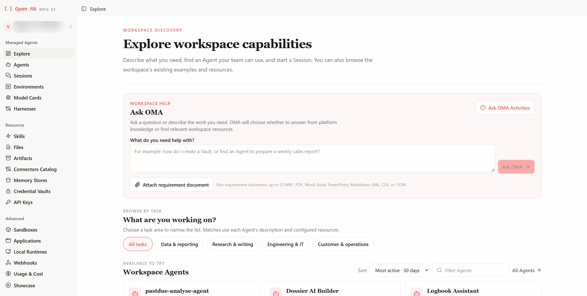
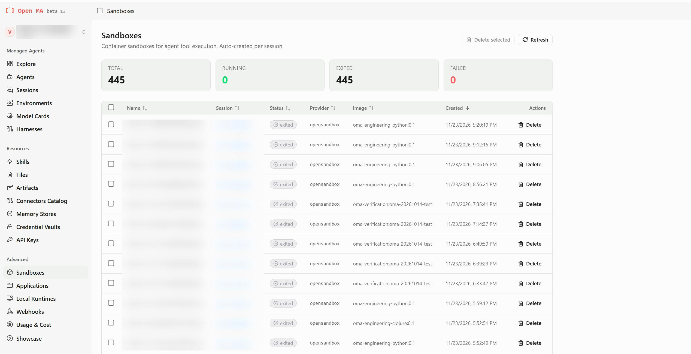
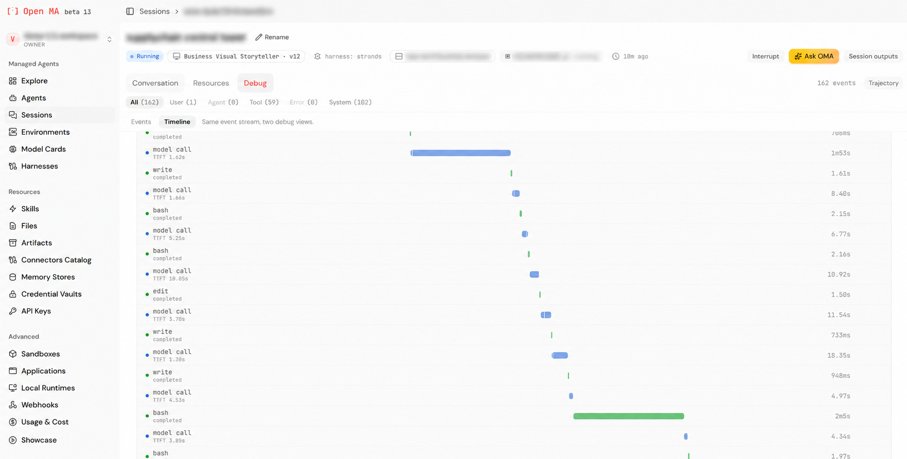
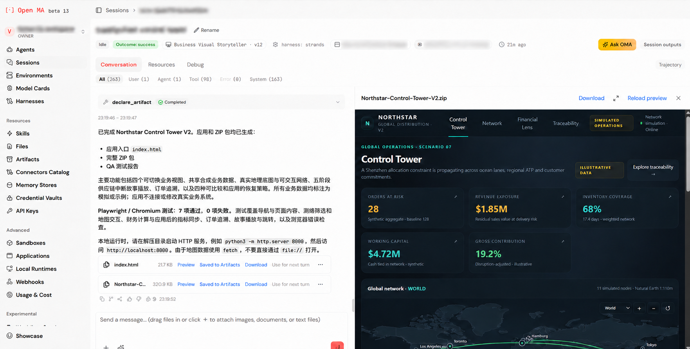

Durable Sessions
Event history, streaming, interruption, recovery, and a timeline for understanding each run.
SELF-HOSTED · ON-PREMISE · MANAGED AGENTS
OMA brings durable Agent Sessions, controlled tool execution, and an operator Console to environments your team runs.
Public distribution repository · Application source code is not included here.
PLATFORM CAPABILITIES
Keep the Session lifecycle, policy, and evidence together while choosing the Harness and runtime that fit each workload.
Event history, streaming, interruption, recovery, and a timeline for understanding each run.
Built-in and custom tools, MCP servers, Skills, approvals, and Vault-backed outbound credentials.
Operate the control plane and data stores yourself, with selectable isolated sandbox providers.
Reusable evaluation plans, controlled runs, retained artifacts, and inspectable outcomes.
ARCHITECTURE OVERVIEW
See how input, the Session event log, Harness, sandbox work, and live observability fit together.
THE CONSOLE
Explore the workspace, review Harness support, inspect sandbox status, and trace outputs from a Session.






INTERACTIVE SHOWCASES
Open standalone walkthroughs for Harnesses, sandboxes, Session history, credential relay, and Agent versioning.
START HERE
Release bundle, image tags, persistent data, and sandbox worker setup.
Open install guide ↗ 02 · TEAMSUse the Console and APISet up Workspaces, Agents, Sessions, resources, and evaluations.
Open user guide ↗ 03 · DEVELOPERSIntegrate with OMAAuthentication, the TypeScript client, native APIs, and event streaming.
Open SDK reference ↗SELF-HOSTED MANAGED AGENTS
Versioned bundles and container image references belong to the release they were built for.
Go to GitHub Releases ↗